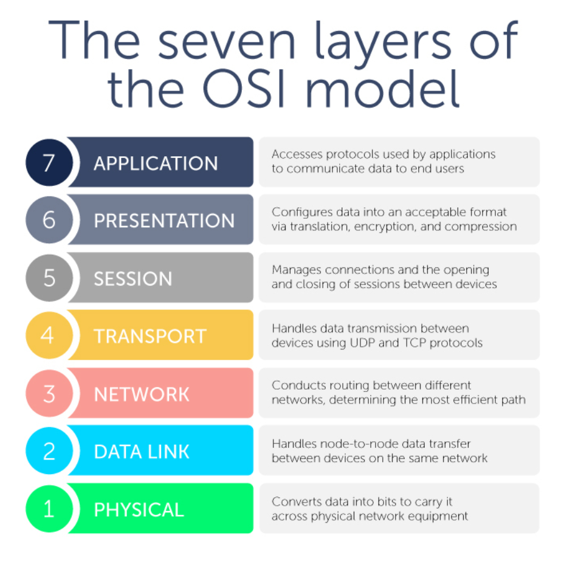
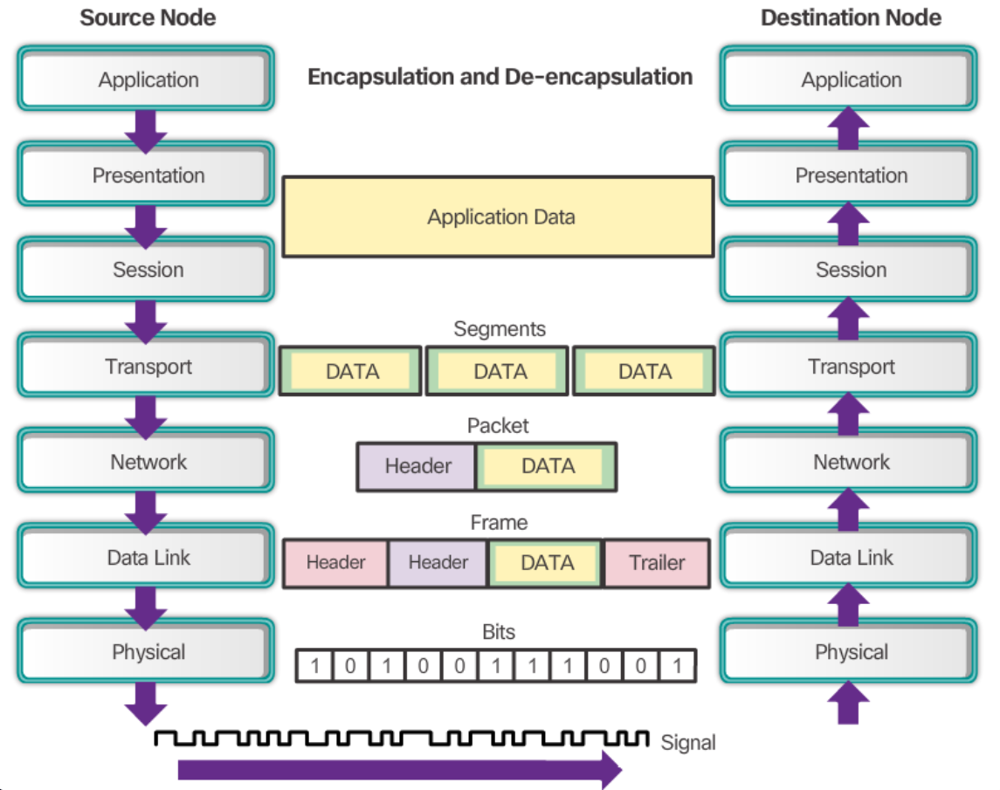
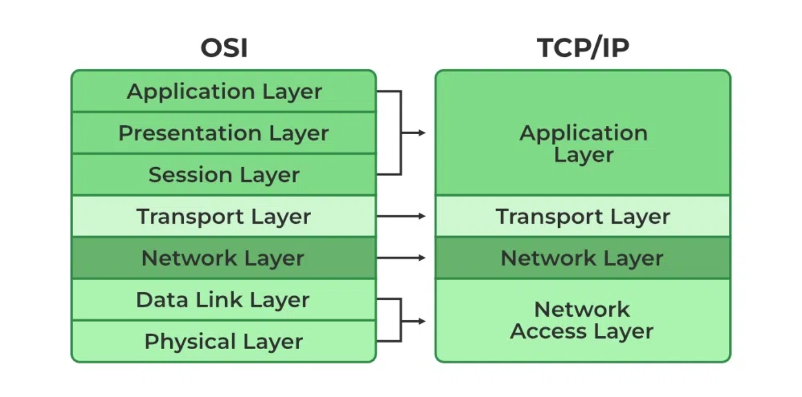
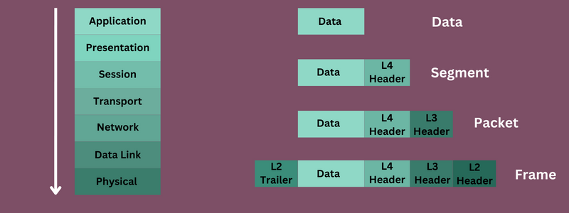

1.1 OSI and TCP/IP
Networking Models categorize and provide structure for networking protocols and standards.
Protocols are sets of rules that define how network devices and software should work together.
The OSI Model:
OSI (Open Systems Interconnection) is a conceptual model that categorizes and standardizes the different functions in a network.

As data moves through the OSI stack, it gets encapsulated with each layer adding something to the original data. By the time it reaches the physical layer, it's now either electric signals sent over wires or radio waves for wireless connections, and it gets de-encapsulated as it moves up the stack on the receiving side.
Two types of interactions happen:
- Adjacent-Layer Interactions: interactions between layers during encapsulation/de-encapsulation.
e.g. interaction between the application and presentation layers as data gets encapsulated.
- Same-Layer Interactions: interactions between the same layer on different devices.
e.g. application layer communication between devices.
Breakdown of each layer:
-
Application:
- Closest layer to the end user.
- Interacts with software applications (e.g., web browsers).
- Protocols: HTTP, FTP.
- Functions include identifying communication partners and synchronizing communication.
-
Presentation:
- Translates data to appropriate format (e.g., application to network format during encapsulation).
- Handles encryption and decryption.
-
Session:
- Controls dialogues (sessions) between hosts.
- Establishes, manages, and terminates connections between local and remote applications.
- Top three OSI layers prepare data before it moves to the next layer.
-
Transport:
- Segments and reassembles data between hosts.
- Breaks large data units into smaller segments for transmission.
- Provides host-to-host (end-to-end) communication.
- Adds L4 header; data is now called a Segment.
-
Network:
- Connects hosts across different networks (e.g., beyond LAN).
- Provides logical addressing (IP addresses).
- Handles path selection between source and destination.
- Routers operate at this layer.
- Adds L3 header; data is now called a Packet.
-
Data Link:
- Connects hosts on the same network.
- Defines data format for transmission on physical medium.
- Uses Layer 2 addressing (MAC addresses).
- Switches operate here.
- Adds L2 header and trailer; data is now called a Frame.
-
Physical:
- Handles physical characteristics of transmission medium.
- Converts digital bits into electrical or radio signals.
- Includes cables and interfaces.
PDUs
PDUs (Protocol Data Units) refer to the specific format of data transmitted at each OSI layer. Each layer's PDU contains data, control info, and headers needed for communication.

The TCP/IP Suite:
TCP/IP has a similar structure to the OSI model, but with fewer layers. It is the model in use on modern networks.

An example of the encapsulation process:
- The Application, Presentation, and Session layers prepare the data.
- The Transport layer segments the data and adds a L4 header.
- The Network layer adds a L3 header (IP address).
- The Data Link layer adds a L2 header and trailer (MAC address).
- Data gets sent over the Physical layer to a router.
- The router operates at Layer 3, so it de-encapsulates the data twice until it reaches the L3 header to check source and destination IP addresses.
- It encapsulates the data again and sends it onward.
- Once data arrives at the destination, it gets de-encapsulated.

Previous
Next